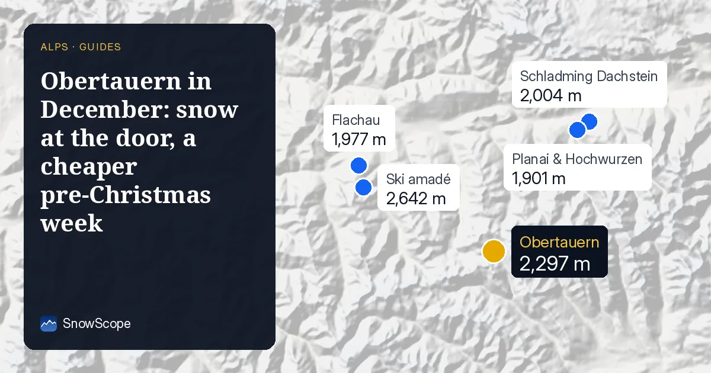

Obertauern فدجنبر: التلج حدا الباب وسيمانة أرخص قبل نوال
أول تيليسييج ف Obertauern كيبدا من 1628 م، يعني القرية كاملة فالبلاصة اللي التلج ديال دجنبر غالبا كيبقى فيها. فالتاريخ ديالنا ديال 46 شتوة، الوسط كان فيه 30 سم ولا كثر فسيمانة 15 حتى 21 دجنبر ف 80 % من الشتوات، والسكيباس ديال 6 أيام كيسوا 331 EUR حتى ل 25 دجنبر عوض 368 EUR.
شوف توقعات التلج مباشرة ديال Obertauern فالتطبيق ديال SnowScopeالعلو ديال التلج، التنبيهات والخريطة 3D، فابور.
الخلاصة بزوج كلمات
إلا بغيتي سيمانة رخيصة فالنمسا فدجنبر بلا ما تخلص كلاسيي، Obertauern هي أول اختيار. المحطة من 1628 م حتى ل 2297 م، فيها 87 كم ديال البيستات المرسومة و 28 تيليسييج، وحتى بيست ما فالواد كتسنى الزهر.
المشكل واضح: بداية دجنبر مازال ماشي مضمونة. فالسيمانة الأولى غير شي نص ديال الشتوات (57 %) كان فيهم 30 سم فالوسط. حجز النص التاني ديال الشهر والحظوظ كتطلع بزاف.


دجنبر سيمانة بسيمانة
فالوسط (1962 م) النسبة ديال الشتوات اللي فيهم 30 سم ولا كثر كتطلع مع الشهر: 57 % من 1 حتى 7 دجنبر، 65 % من 8 حتى 14، 80 % من 15 حتى 21 و 85 % فسيمانة نوال. فالفوق (2297 م) نفس السيمانات كيعطيو 76، 80، 85 و 91 %.
العلو العادي فالوسط كيطلع من 34 سم نهار 1 دجنبر ل 43 سم نهار 15 و 62 سم نهار 31. فعام ضعيف (شتوة من 10) نهار 15 دجنبر فيه غير 17 سم، وفعام زوين 86 سم. وحتى شتوة من 46 ما كانت الأرض عريانة فالقرية نهار 15 دجنبر.
تنبيه على المدى الطويل: المعدل ديال دجنبر فالوسط نزل من 46 سم فأول 15 شتوة ل 38 سم فآخر 15، والشتوة اللي فاتت كان غير 18 سم نهار 15 دجنبر.
شحال كيسوا السكيباس
اللائحة الرسمية ديال 2026-27 فيها جوج مواسم. السكيباس ديال نهار واحد 72 EUR فالجوج. التوفير كاين فبزاف ديال الأيام: 6 أيام ب 331 EUR فالموسم B من 20 نونبر حتى ل 25 دجنبر، مقابل 368 EUR فالموسم الكبير.
يعني سيمانة كتسالي قبل نوال كتخلص السكيباس بالثمن الرخيص ديال الموسم B، بنفس التيليسييجات وفأغلب الشتوات تلج كافي.
مقارنة مع Kitzsteinhorn (Kaprun)
Kitzsteinhorn فوق Kaprun هو الجواب الكلاسيكي ديال دجنبر: كلاسيي فيه 137 سم فالفوق نهار 15 دجنبر عادي. ولكن أول تيليسييج فيه ف 765 م، فين نهار 15 دجنبر عادي فيه 6 سم، والوسط ديالو (1894 م) قريب من Obertauern: 40 سم و 76 % ديال الشتوات فيهم 30 سم فسيمانة 15 حتى 21 دجنبر.
فالفلوس الأمر واضح: 6 أيام ف Kitzsteinhorn ب 396 EUR فبداية الموسم و 440 EUR فالموسم الكبير. السيمانة اللي قبل نوال ف Obertauern أرخص، وكتخرج بالسكي من الأوطيل.
لمن مناسبة
للعائلات واللي كيعرفو يتزلجو مزيان وبغاو يتزلجو من باب الأوطيل فدجنبر بفلوس أقل. اللي بغا تلج عميق يتسنى سيمانة نوال، فاش 41 % من الشتوات كان فيهم 60 سم ولا كثر فالوسط، ولا يطلع لفوق.
نصايح للي كيتزلجو
- ختار من 15 حتى 21 دجنبر ولا من بعد: الحظ ديال 30 سم فالوسط كيطلع من 57 % ل 80 % مقارنة مع السيمانة الأولى.
- خلي السكيباس ديال 6 أيام يسالي على قبل 25 دجنبر باش تبقى فالموسم B (331 EUR عوض 368 EUR).
- شوف خريطة التلج سيمانة قبل ما تمشي: الشتوة اللي فاتت كتبين بلي دجنبر ضعيف مازال كيوقع.
- خارج البيست من بعد التلج: قرا النشرة ديال الانهيارات ديال Salzburg كل صباح.
خرائط أخرى (مواقع خارجية)
المراجع والمصادر
- Obertauern: official lift-pass prices (2026-27), checked 13 November 2026 www.ski-obertauern.at/en/ski-pass/ski-pass-prices
- Kitzsteinhorn (Kaprun): official lift-pass prices (2026-27), checked 13 November 2026 www.kitzsteinhorn.at/en/tickets-prices/ski-board
على هاد الأرقام
الأرقام ديال التلج: التاريخ ديال التلج ديال SnowScope، 46 شتوة اللي فاتت (1980-81 حتى ل 2025-26) فالعلوات ديال المحطة، مصحح بالعلو (تقدير لمنطقة، ماشي البلاغات ديال المحطة)؛ «تلج مزيان» = 30 سم ولا كثر فالأرض فالمعدل ديال السيمانة. الخريطة: العلو العادي ديال التلج نهار 15 دجنبر موزع على التضاريس حسب العلو. البيستات والتيليسييجات: OpenSkiMap. الأثمنة ديال السكيباس: اللوائح الرسمية ديال المحطات، متشافة نهار 13 نونبر 2026؛ الأثمنة تقدر تتبدل.
النشرات الرسمية ديال الانهيارات: Lawinenwarndienst Salzburg
كيفاش تستاشهد بهاد المقال
للبحث، التعليم ولا الصحافة: الأرقام والرسومات تقدر تعاود تخدم بيهم بحرية تحت CC BY 4.0 مع هاد الاستشهاد.
SnowScope (2026), Obertauern فدجنبر: التلج حدا الباب وسيمانة أرخص قبل نوال, https://snowscope.app/blog/ar/2026/11/obertauern-december-skiing-cheap-snow-sure-pre-christmas.html, تشاف ف 2026-11-14
SnowScope (Atlas Labs). (2026, November 14). Obertauern فدجنبر: التلج حدا الباب وسيمانة أرخص قبل نوال. SnowScope snow reports. https://snowscope.app/blog/ar/2026/11/obertauern-december-skiing-cheap-snow-sure-pre-christmas.html
BibTeX
@misc{snowscope2026obertauerndecemberskiing,
author = {{SnowScope (Atlas Labs)}},
title = {Obertauern فدجنبر: التلج حدا الباب وسيمانة أرخص قبل نوال},
year = {2026},
month = nov,
howpublished = {\url{https://snowscope.app/blog/ar/2026/11/obertauern-december-skiing-cheap-snow-sure-pre-christmas.html}},
note = {Published 2026-11-14 13:29 UTC; accessed 2026-11-14}
}· CC BY 4.0 · الطريقة، الداتا والأدوات →
Obertauern: التلج والحرارة حسب العلو، هاد الشتا مقارنة مع اللي فاتت (الأدوات) →
تابع Obertauern
فابور: ميساج ملي يجي التلج، والتوقعات كل صباح.